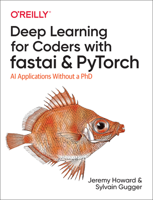

Practical Deep Learning for Coders
Preface
This is a preview version of Deep Learning for Coders with Fastai and PyTorch: AI Applications Without a PhD. Note that chapters shown in italics in the sidebar are only available as a preview of the first few paragraphs. The full content of all chapters is available for free as Jupyter Notebooks here with only basic formatting. A nicely typeset version can be purchased from Amazon.

Here’s a list of all the full chapters available here:
- Chapter 1: Your Deep Learning Journey
- Chapter 4: Under the Hood: Training a Digit Classifier
- Chapter 13: Convolutional Neural Networks
- Chapter 14: ResNets
- Chapter 16: The Training Process
- Chapter 17: A Neural Net from the Foundations
This book is designed to go with our free deep learning course, available at course.fast.ai.
Once you’ve finished the first eight chapters of the book, or completed course.fast.ai, you’ll be ready for our new course, From Deep Learning Foundations to Stable Diffusion, which starts on Oct 11th 2022 (Australian time; Oct 10th US time). You can sign up here. If you’re an open source author you may qualify for a scholarship – details here.